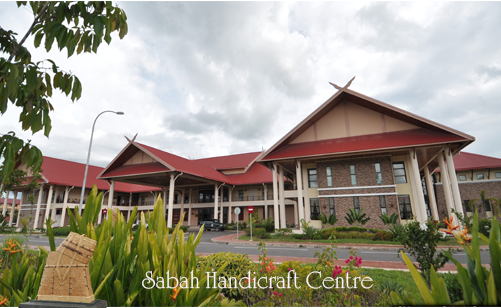

To foster cultural diversity through craft-making and skills training, preserving heritage while creating sustainable livelihoods.These products are the result of Yayasan Sabah Group's vigorous effort in training local people from all over Sabah. All these products are handcrafted by the handicraft trainees.
Pusat Kraftangan Sabah is dedicated to preserving the rich cultural heritage of Sabah through traditional and modern handicrafts. The centre supports artisans, promotes creativity, and encourages cultural appreciation through craft-making activities.
Production of traditional crafts including batik, rattan and bamboo products.
Workshops and training sessions for visitors and communities.
Exhibitions and galleries showcasing Sabah's cultural heritage.